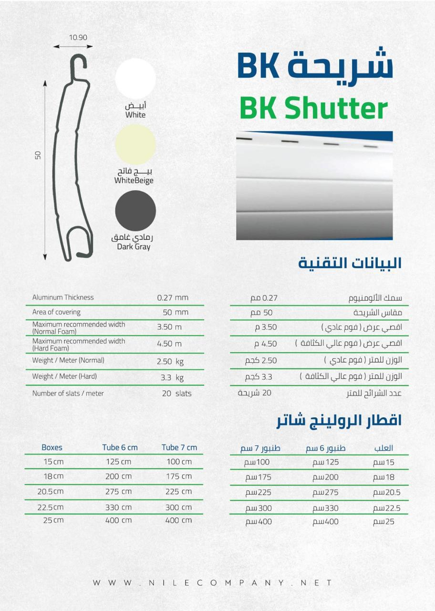

Normal Foam
- Maximum recommended width
- 3.50 m
- Weight per metre
- 2.50 kg
Technical Specifications
Review the supplied profile data, operating options, available colours and warranty coverage used when planning suitable shutter systems for properties in Sharm El Sheikh.
Materials & source
Sharm Shutters uses selected shutter materials supplied through Nile Company, including the BK Shutter profile featured in this technical section. Final suitability, dimensions and operating configuration are confirmed after inspection and measurement of the property.
| Specification | Supplied value |
|---|---|
| Profile/slat name | BK Shutter |
| Slat coverage height | 50 mm |
| Profile depth | 10.90 mm |
| Aluminium thickness | 0.27 mm |
| Number of slats per metre | 20 |
| Manufacturing material | High-quality aluminium |
| Filling options | Normal foam; high-density foam |
| Maximum recommended width with normal foam | 3.50 m |
| Maximum recommended width with high-density foam | 4.50 m |
| Weight per metre with normal foam | 2.50 kg |
| Weight per metre with high-density foam | 3.3 kg |
Colour availability should be confirmed when preparing the quotation.
Foam selection and the final profile configuration should be confirmed according to the opening dimensions, operating requirements and site assessment.
| Box size | 6 cm tube | 7 cm tube |
|---|---|---|
| 15 cm | 125 cm | 100 cm |
| 18 cm | 200 cm | 175 cm |
| 20.5 cm | 275 cm | 225 cm |
| 22.5 cm | 330 cm | 300 cm |
| 25 cm | 400 cm | 400 cm |
The table reproduces the rolling-size guidance shown in the supplied BK Shutter datasheet. Final box, tube and height selection must be confirmed by the technical team after measurement.
Straightforward fixed wall control for suitable electric shutter installations.
A receiver-enabled control configuration allowing operation by wireless remote control.
Smart control through a compatible mobile application and Wi-Fi connection.
Control availability and compatibility depend on the selected motor, electrical preparation and project requirements.
The recommended operating method is selected according to opening size, frequency of use, access, electrical preparation and customer preference.
Coverage against manufacturing defects.
Coverage against manufacturing defects.
Warranty coverage applies against manufacturing defects and remains subject to the approved quotation, correct operation, installation conditions and the final warranty terms supplied with the project.
Selected materials and finishes are chosen to support regular use and complement different properties.
Original reference
Technical profile data shown on this page is based on the supplied Nile Company BK Shutter datasheet.
View Full Technical Datasheet
Book a free site inspection so the team can confirm measurements, profile configuration, motor operation and control options for your property.